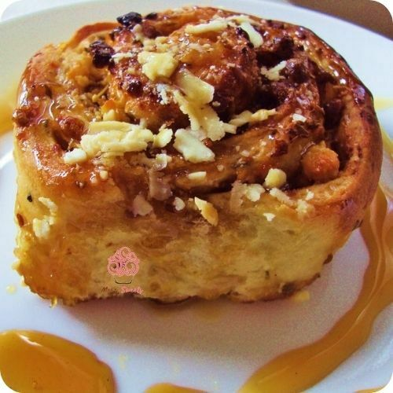

Home
Golfeados

Description
Golfeados are a Venezuelan pastry. It's in effect their version of sticky buns but with a
couple of distinct twists. The filling is not just butter and sugar, there's also cheese
in there. Plus, these sweet rolls are usually flavored with anise.
Ingredients
Dough
- 500 g all-purpose flour
- 7 g active dry yeast (1 packet)
- 1/2 cup warm milk
- 1/2 cup warm water
- 1/4 cup sugar
- 1 egg
- 1/4 cup unsalted butter, melted
- 1/2 tsp salt
Filling
- 1/2 cup panela (or brown sugar), grated
- 1 tbsp ground anise seeds
- 1/2 cup grated white cheese (queso llanero or feta as substitute)
- Butter for spreading (softened)
Glaze
- 1/2 cup panela (or brown sugar)
- 1/4 cup water
- 1 tbsp butter
- Optional: pinch of cinnamon
Preparation
- In a small bowl, mix warm water, warm milk, sugar, and yeast. Let it sit for 10 minutes until it becomes foamy.
- In a large bowl, combine flour and salt. Add the egg, melted butter, and the yeast mixture. Mix and knead until a smooth dough forms (about 10 minutes).
- Cover the dough with a clean towel and let it rise in a warm place for 1 to 1.5 hours or until doubled in size.
- On a floured surface, roll the dough into a rectangle about 0.5 cm (1/4 inch) thick.
- Spread softened butter evenly over the dough. Sprinkle grated panela (or brown sugar), ground anise seeds, and grated cheese on top.
- Roll the dough tightly into a log, starting from the long side. Cut into even slices about 3–4 cm wide.
- Place the slices cut-side up on a greased baking tray, leaving space between them. Let them rest for 30 minutes.
- Preheat the oven to 180°C (350°F).
- Bake the golfeados for 25–30 minutes or until golden brown.
- Meanwhile, prepare the glaze by heating panela, water, and butter in a saucepan until it forms a syrup. Add cinnamon if desired.
- As soon as the golfeados come out of the oven, brush them generously with the syrup.
- Let them cool slightly and serve warm. Enjoy!